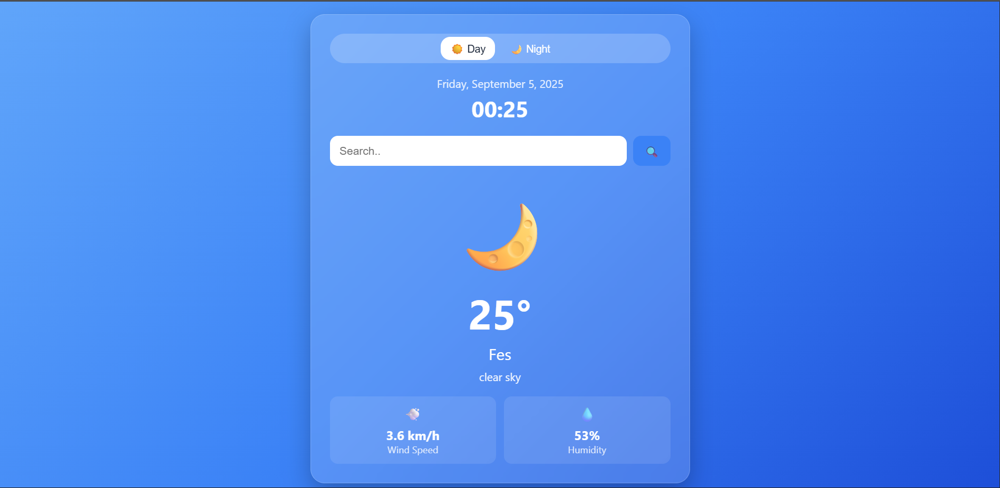
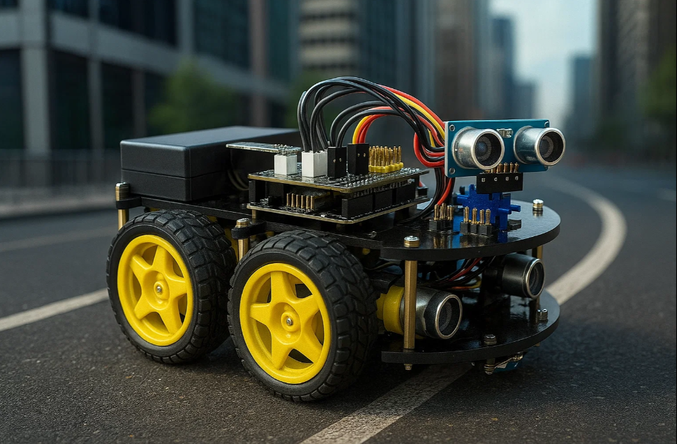
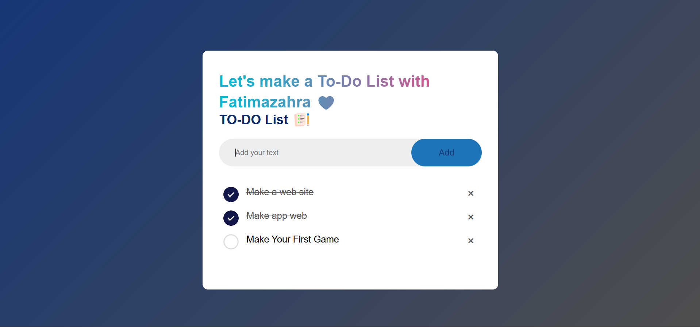
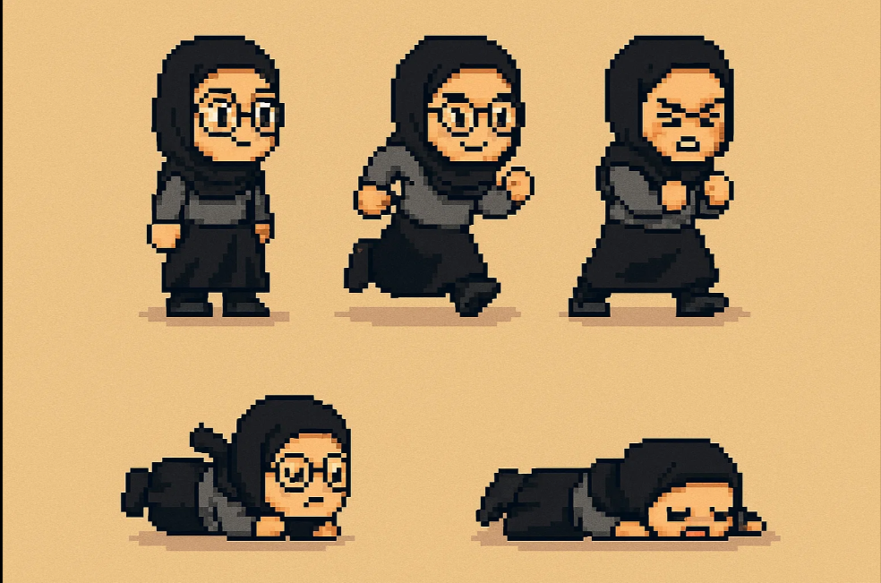

My recent
works
-

Autonomous Smart Bin with Digital Twin
Development of a smart trash bin using ESP32, ultrasonic sensor, and servo motor, synchronized with a 3D digital twin in Blender. When the bin opens in reality, the digital model opens simultaneously.
ESP32 Ultrasonic Sensor Servo Motor Blander IOT Digital Twin -

Weather App
A compact and elegant weather application displaying real-time conditions. Features a smooth night-mode interface with dynamic icons, temperature, wind speed, and humidity for a seamless user experience.
HTML CSS JavaScript OpenWeather API -

Contact Me -Let's Connect
A modern and responsive contact form built with HTML and CSS. Includes a friendly greeting, clean input fields, and a stylish submit button. Visitors can send messages directly to my inbox — I’ll receive them instantly!

Autonomous Arduino Robot
Design and development of a robot using Arduino, equipped with 3 ultrasonic sensors, 4 wheels, and various electronic components. The robot navigates autonomously by detecting and avoiding obstacles in real time.
Arduino Ultrasonic Sensors DC Motors Motor Driver Embedded C Obstacle Avoidance Color Sensors
To-Do-List -Fatimazahra
A responsive and animated To-Do List application built with HTML, CSS, and JavaScript. Users can add tasks, mark them as completed, delete them, and even save their list using local storage. Includes a personalized greeting and Enter-key functionality for smooth interaction.
HTML CSS JavaScript Local Storage UI Animation
2D Platformer – My First Game with Godot
A beginner-friendly 2D platformer developed using the Godot engine. Features smooth player movement, animated sprites, collision detection, and interactive elements. Designed to explore game mechanics and level design with a playful touch.
Godot GDScript 2D Physics Pixel Art Level DesignResume
Explore my academic journey — from foundational physics to advanced smart industry systems.
Summary
Fatima Zahra Rabouli
Final-year Master's student in Smart Industry with a strong foundation in automation, robotics, and digital modeling. Passionate about intelligent systems and industrial innovation, I combine technical precision with creative problem-solving to design smarter, more connected environments. My academic journey and hands-on projects reflect a commitment to modernizing production through IoT, embedded programming, and digital twins. Always curious and methodical, I’m driven by the challenge of transforming ideas into impactful solutions.
Education
Master’s in Smart Industry
2024 – 2025 (Final Year)Université Sidi Mohamed Ben Abdellah, Fès, Morocco- Focused on automation, robotics, digital modeling, and industrial systems.
- Completed projects in IoT, embedded programming, and production line optimization.
- Applied AI/ML for predictive maintenance and smart system design.
- Tools: Python, MATLAB, Arduino, TwinCAT, SolidWorks.
Licence en Sciences de la Matière Physique
2023 – 2024Faculté des Sciences Dhar El Mahraz, Fès- Specialized in physics with a focus on electronics and scientific analysis.
- Developed strong foundations in electromagnetism, signal processing, and embedded systems.
- Completed academic projects including autonomous robotics, digital twin modeling, and virtual machine creation.
- Tools: Python, C++, MATLAB, Blender, Excel.
DEUG in Physical Sciences
2020 – 2023Faculté des Sciences, Fès- Built a strong foundation in physics, mathematics, and scientific analysis.
- Prepared for advanced studies in engineering and automation.
- Developed analytical thinking and problem-solving skills.
Contact
me

0771178591